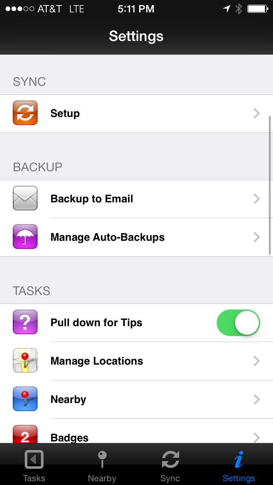
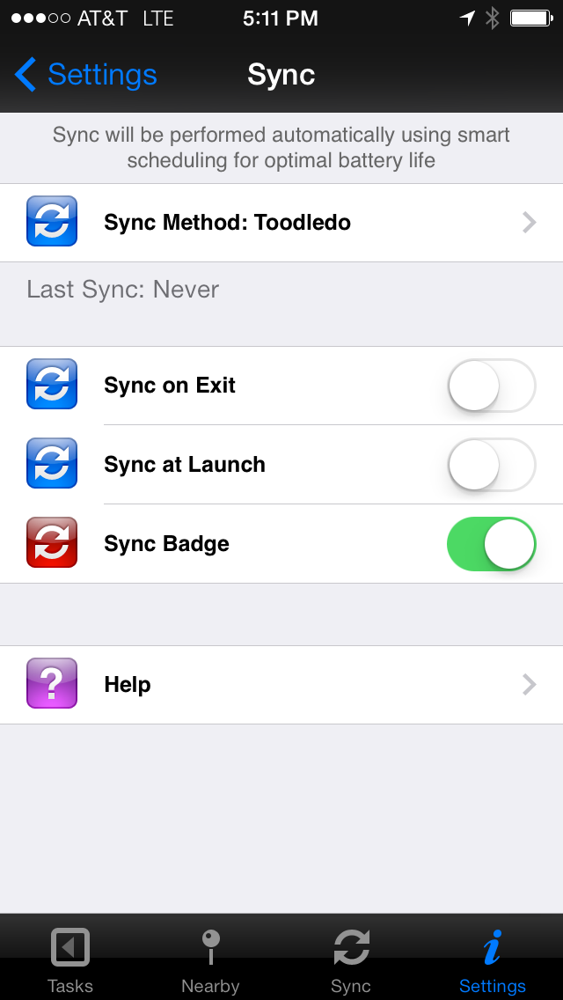
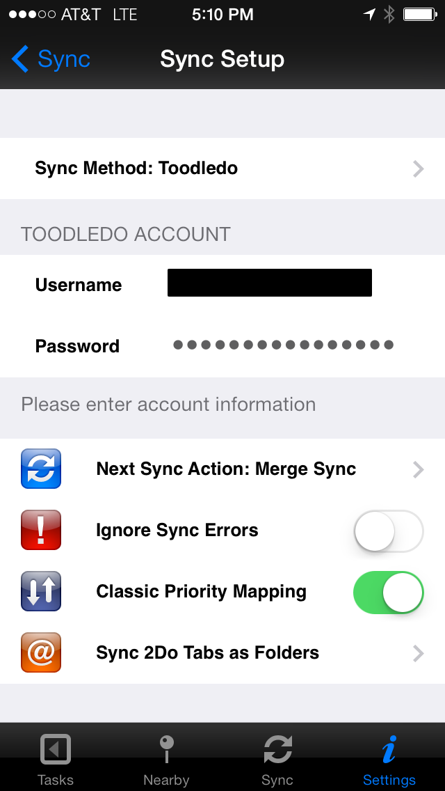

My wife and I use an app called 2do to share ToDos and shopping lists with each other. It is a beautiful app, which works for Mac, iOS, and Android. It allows us to have the same list on both her phone and mine.

To sync with each other, we have created a shared account on Toodledo. Remember your user name and password. Perhaps save it in a secure password saving app like MiniKeePass.
Next, go into the 2do app and click settings.
Click “Setup” under “Sync”.
From here, select "Sync Method: (something)". This will take you to another page. At the top, make sure Sync Method: Toodledo is selected. Then, enter your Toodledo username and password.
Now, you can go back to the Tasks list and click Sync. This will upload your tasks, todos, or shopping lists up to Toodledo's servers. If you follow these same steps on your spouses phone, you both can sync to the same account and see the same lists! It even works if one of you has an Android phone and the other has an iPhone. I tested it with my Moto X.